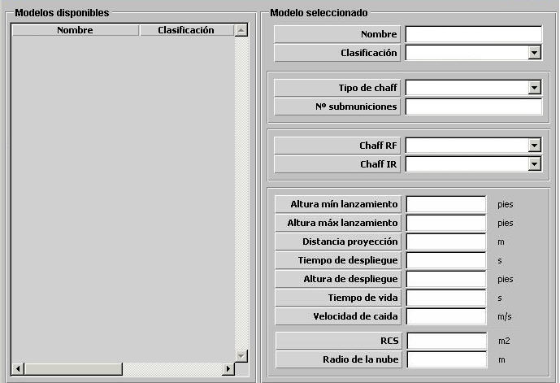

Cartucho Chaff

Descripción de los parámetros:
Tipo de Chaff: Puede tomar los siguientes valores:
Este parámetro determina a qué sensores y en qué medida afecta este Chaff. Los tipos AÉREOS y HELO sólo podrán ser instalados en unidades Aviones y Helicópteros respectivamente.
En unidades de superficie o submarinas se pueden instalar distintos tipos de chaff D, S ,C ,B, IR, RF y RF+IR, pero no todos se pueden combinar en la misma unidad, sino sólo aquellos que sean compatibles.
Hay dos grupos de chaff compatibles:
| Grupo 1 | D, S, C, B, IR |
| Grupo 2 | IR, RF, RF+IR |
Nº de Submuniciones: Este parámetro determina el número de submuniciones de cada cartucho de este tipo de chaff. Es tenido en cuenta durante la secuencia de lanzamiento y en la recarga del lanzador de chaff. También afecta al RCS de la nube de tal forma que mientras mayor sea este parámetro, mayor es el RCS que se puede conseguir en un lanzamiento de este tipo de chaff.
Unidades: ---
Rango: 1 – 999
Altura Mínima de Lanzamiento: Este parámetro determina la mínima altura de la unidad aérea lanzadora (Avión o Helicóptero) a la que puede llevar a cabo un lanzamiento de este tipo de chaff. Sólo podrá ser introducido si se ha seleccionado Tipo de Chaff AÉREO o HELO.
Unidades: pies
Rango: 0 – 9999
Altura Máxima de Lanzamiento: Este parámetro determina la máxima altura de la unidad aérea lanzadora (Avión o Helicóptero) a la que puede llevar a cabo un lanzamiento de este tipo de chaff. Sólo podrá ser introducido si se ha seleccionado Tipo de Chaff AÉREO o HELO.
Unidades: pies
Rango: 0 – 99999
Distancia de Proyección: Este parámetro determina la distancia desde el punto de lanzamiento a la que se despliegan las submuniciones de chaff lanzadas y comienzan a formar la nube.
Unidades: metros
Rango: 0 – 9999
Altura de Despliegue: Este parámetro determina la altura a la que se despliegan las submuniciones de chaff lanzadas y comienzan a formar la nube.
Unidades: pies
Rango: 0 – 9999
Tiempo de Despliegue: Este parámetro determina el tiempo que tarda en formarse la nube desde que se despliegan.
Unidades: segundos
Rango: 0 – 999
Tiempo de Vida: Este parámetro determina el tiempo que permanece formada la nube desde que se completa su formación.
Unidades: segundos
Rango: 0 – 999
Velocidad de Caída: Este parámetro determina la velocidad con la que desciende la nube desde que se despliega.
Unidades: metros / segundo
Rango: 0 – 100
RCS: Este parámetro determina el RCS asociado a cada submunición de este tipo de chaff. Es tenido para calcular el RCS total de la nube lanzada y por tanto afecta a la distancia a la que la nube es detectada por radar. Sólo podrá ser introducido si NO se ha seleccionado Tipo de Chaff IR.
Unidades: m2
Rango: 0 – 999999
Radio Nube: Este parámetro determina el radio de la nube formada por lanzamiento de este tipo de submunición chaff.
Unidades: metros
Rango: 0 – 999